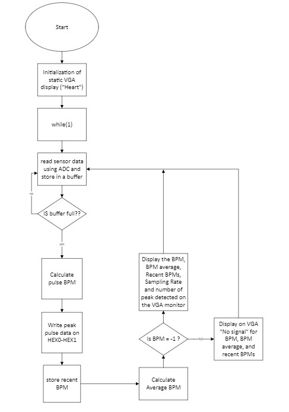

I built a heart rate monitor on a DE10-Lite FPGA that reads a pulse sensor, computes beats per minute, and shows live readings on both a seven segment display and a VGA monitor. The analog pulse signal is digitized by the MAX10 built in ADC, and a NIOS II soft core processor handles the signal processing and display logic, a complete hardware and software digital system on a single board.

Software flow. Sample the ADC into a buffer, detect peaks, compute BPM, then update the seven segment and VGA outputs.
What I built
1) NIOS II system in Platform Designer
Assembled the soft core system with 120 KB of on chip memory, a JTAG UART, a timer, a system ID, and a 50 MHz PLL configured to supply a 25 MHz VGA clock and a 10 MHz ADC clock.
Added the modular ADC on Channel 1, a VGA character buffer with DMA, the VGA controller and dual clock buffer, and a 16 bit PIO for the seven segment display.
2) BPM signal processing in C
Wrote a BPM routine that samples ADC data, detects pulse peaks above a noise threshold, and converts peak count and spacing into beats per minute.
Added a "No Signal" state when readings stay flat (no finger on the sensor), and displayed current BPM, average BPM, recent history, peak count, and sampling rate on the VGA monitor.
3) Bring up and verification
Validated each peripheral on its own. I drove the seven segment display with a counter, printed a test string to VGA, and fed a known sine wave into the ADC with an Analog Discovery wave generator.
Measured the pulse sensor swing from 0.9 V to 1.8 V (about 1200 to 2400 ADC counts) and set the detection threshold near 1200 to reject noise.
Results
Swept sampling rate and sample size, then settled on 100 Hz and 250 samples for the best peak detection accuracy.
Validated BPM against a smartwatch across five 30 second trials covering rest, hand movement, and post exercise, with closely matching readings.
Removed VGA flicker by writing static content once and updating only the dynamic values when the ADC buffer fills.
A NIOS II soft core taking a pulse from ADC to BPM to VGA and seven segment
A full FPGA digital system. Analog acquisition, real time signal processing, and two live displays on one DE10-Lite board.